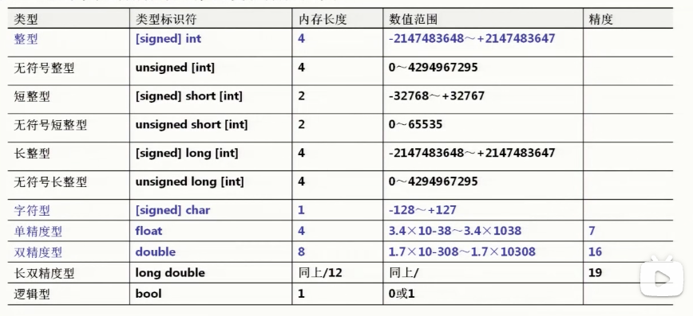
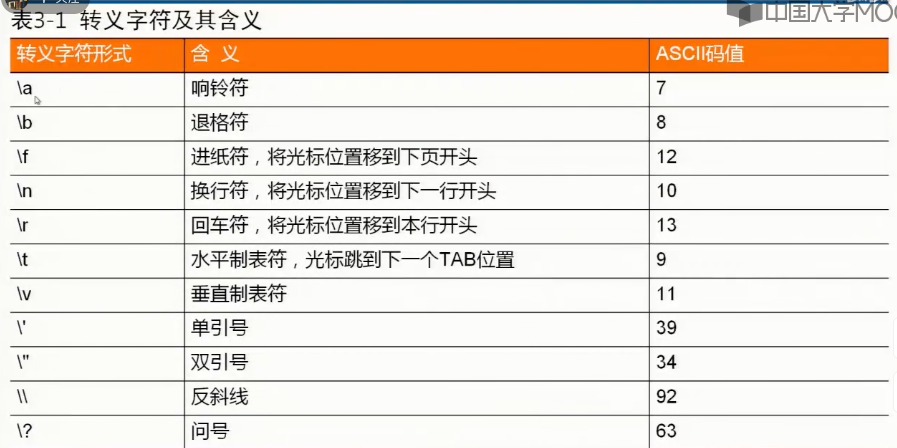
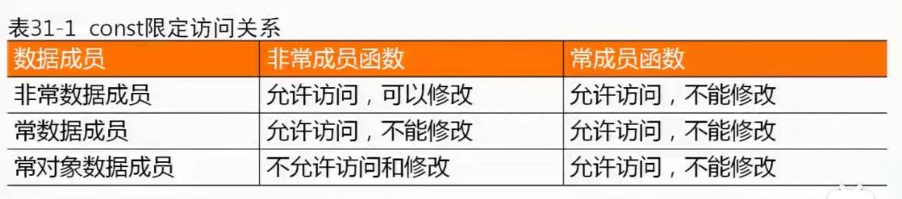

计算机系统：
- 硬件：运算器、控制器、存储器、输入设备、输出设备
- 软件：
- 系统软件：操作系统、数据库系统、网络系统、程序设计语言与语言处理程序
- 程序设计语言与语言处理程序：机器语言与汇编语言、高级语言（C 语言、Fortran 等）、面向对象的程序设计语言（C++ 等）
- 应用软件
- 系统软件：操作系统、数据库系统、网络系统、程序设计语言与语言处理程序
头文件：防卫式声明（guard）
#inndef __NAME__ // 判断当前是否已经定义过
#define __NAME__
...;
#endif数据类型

| 类型 | 类型标识符 | 内存长度 | 数值范围 | 精度 |
|---|---|---|---|---|
| 整型 | [signed] int | 4 | -2147483648 ~ +2147483647 [-2^31, 2^31 - 1] | |
| 无符号整型 | unsigned [int] | 4 | 0 ~ 4294967295 [0, 2^32 - 1] | |
| 短整型 | [signed] short [int] | 2 | -32768 ~ +32767 [-2^15, 2^15 - 1] | |
| 无符号短整型 | unsigned short [int] | 2 | 0 ~ 65535 [0, 2^16 - 1] | |
| 长整型 | [signed] long [int] | 8 | [-2^63, (2^63 - 1)] | |
| 无符号长整型 | unsigned long [int] | 8 | [0, 2^64 - 1] | |
| 字符型 | [signed] char | 1 | -128 ~ +127 | |
| 单精度型 | float | 4 | [-2^128, 2^128] or [-3.4e+38, 3.4e+38] | 7 |
| 双精度型 | double | 8 | [-2^1024, 2^1024] or [-1.79e+308, 1.79e+308] | 16 |
| 长双精度型 | long double | 同上/12 | 同上 | 19 |
| 逻辑型 | bool | 1 | 0 或 1 |
浮点与整型同样的字节数，为什么前者可以表示的范围更大？
float 和 double 的精度是由尾数位来决定的，而其范围是由指数位来决定的，float 的指数位有 8 位，double 的指数位有 11 位，它们的分布如下：
float：1 bit [符号位] | 8 bits [指数位] | 23 bits [尾数位]，尾数位 2^23 = 8388608 一共 7 位，因此最多能够保证 7 位有效数字，但一定能够保证 6 位有效数字；指数位有 8 位，因此指数有 2^7 = 128。
double：1 bit [符号位] | 11 bits [指数位] | 52 bits [尾数位]，尾数位 2^52 = 4503599627370496 一共 16 位，因此最多能够保证 16 位有效数字，但一定能够保证 15 位有效数字；指数位有 11 位，因此指数有 2^10 = 1024。
常量（Constant）：程序中值不能被修改的数据。分为字面常量和符号常量。
符号常量：定义形式 #define 标识符 常量
变量（Variable）：程序运行期间值可以改变的量。变量实际上就是计算机中的一个内存单元。变量类型 变量名列表;
变量类型 变量名1 = 初值1, 变量名2 = 初值2, ...;

输入与输出：
- 输入：从键盘、鼠标等外部输入设备向计算机输入数据；
- 输出：向显示器、打印机等外部输出设备输出数据；
#include <iostream> // 标准输入输出流库的头文件
#include <iomanip> // 格式控制头文件
using namespace std; cout 和 cin 对象的使用：cout << 表达式1 << 表达式2 << ...; 和 cin >> 变量1 >> 变量2 >> ...;
cin 默认要求键盘输入数据之间使用空格、Tab 键、回车作为分隔符；
格式控制：
Switch 语句：
switch (表达式) {
case 常量表达式1: 语句序列1;
case 常量表达式2: 语句序列2;
default: 默认语句序列;
}指针与引用
❓问：指针和引用的区别是什么？
指针和引用的区别：指针是一个变量，只不过这个变量存储的是一个地址，指向内存的一个存储单元； 而引用跟原来的变量实质上是同一个东西，只不过是原变量的一个别名而已。指针和引用都是一种内存地址的概念，区别在于指针是一个实体，而引用只是一个别名。
- 指针时存储变量地址的变量；引用是变量的别名；
- 指针变量定义时不必初始化；引用定义时必须初始化；
- 指针变量定义时可以初始化为
NULL；引用不能初始化为NULL； const修饰符：const修饰指针变量：const放在之前，指针变量所指变量的值不可改变，指针值可以改变；const放在之后，指针变量所指变量的值可以改变，指针值不可以改变；const修饰引用：const放在&之前，不能修改引用所表示的变量的值；const放在&之后，const的作用被忽略，可以修改引用所表示的变量的值；
- 非常指针在指针赋值后可以改变指针值；引用在初始化之后不能再作为别的变量的别名；
sizeof运算符作用于指针变量得到指针变量自身大小；作用于引用，得到引用所指向的变量的大小；- 指针的自增、自减表示指向下一个同类型变量的地址，一般用于指向数组的指针；引用的自增、自减表示指向变量值的增、减；
❓问：指针参数传递和引用参数传递的区别？
- 指针参数传递本质上是值传递，它所传递的是一个地址值。值传递过程中，被调函数的形式参数作为被调函数的局部变量处理，会在栈中开辟内存空间以存放主调函数传递进来的实参值，从而形成实参的一个副本（替身）。值传递的特点是，被调函数对形式参数的任何操作都是作为局部变量进行的，不会影响主调函数的实参变量的值（形参指针变了，实参指针不会变）。
- 引用参数传递过程中，被调函数的形式参数也作为局部变量在栈中开辟了内存空间，但是这时存放的是由主调函数放进来的实参变量的地址。被调函数对形参（本体）的任何操作都被处理成间接寻址，即通过栈中存放的地址访问主调函数中的实参变量（根据别名找到主调函数中的本体）。因此，被调函数对形参的任何操作都会影响主调函数中的实参变量。
- 引用传递和指针传递是不同的，虽然他们都是在被调函数栈空间上的一个局部变量，但是任何对于引用参数的处理都会通过一个间接寻址的方式操作到主调函数中的相关变量。而对于指针传递的参数，如果改变被调函数中的指针地址，它将应用不到主调函数的相关变量。如果想通过指针参数传递来改变主调函数中的相关变量（地址），那就得使用指向指针的指针或者指针引用。
- 从编译的角度来讲，程序在编译时分别将指针的引用添加到符号表上，符号表中记录的是变量名以及变量所对应地址。指针变量在符号表上对应的地址值为指针变量的地址值，而引用在符号表上对应的地址值为引用对象的地址值（与实参名字不同，地址相同）。符号表生成之后就不会再改，因此指针可以改变其指向的对象（指针变量中的值可以改），而引用对象则不能修改。
智能指针：作用是管理一个指针，避免程序员申请的空间在函数结束时忘记释放，造成内存泄漏的发生。智能指针就是一个类，当超出了类的作用域时，类会自动调用析构函数，析构函数会自动释放资源。智能指针的作用原理就是在函数结束时自动释放内存空间，不需要手动释放内存空间。
智能指针常用接口：
T* get();
T& operator*();
T* operator->();
T* operator=(const T& val);
T& release();
void reset (T* ptr = nullptr);- T 是模板参数，也就是传入的类型；
get()用来获取auto_ptr封装在内部的指针，也就是获取原生指针；operator重载了->, *, =操作符；release()将auto_ptr封装在内部的指针置为nullptr，但并不会破坏指针所指向的内容，函数返回的是内部指针置空之前的值；- 直接释放封装的内部指针所指向的内存，如果制定了
ptr的值，则将内部指针初始化为该值（否则将其设置为nullptr；
C++ 中的四种智能指针：
1、auto_ptr：是 C++98 中的方案，C++11 中已经抛弃。采用所有权模式
auto_ptr<std::string> p1 (new string ("hello"));
auto_ptr<std::string> p2;
p2 = p1; // auto_ptr 不会报错此时不会报错，p2 剥夺了 p1 的所有权，但是当程序运行时访问 p1 将会报错。所以 auto_ptr 的缺点是：存在潜在的内存崩溃问题。
2、unique_ptr：实现独占式拥有或严格拥有概念，保证同一时间内只有一个智能指针可以指向该对象。它对于避免资源泄漏特别有用。采用所有权模式。
unique_ptr<string> p3 (new string (auto));
unique_ptr<string> p4;
p4 = p3; // 此时会报错编译器认为 p4 = p3 非法，避免了 p3 不再指向有效数据的问题。因此，unique_ptr 比 auto_ptr 更加安全。
3、shared_ptr：共享型，强引用。实现共享式拥有概念，多个智能指针可以指向相同对象，该对象和其相关资源会在「最后一个引用被销毁」时候释放。从名字 share 就可以看出资源可以被多个指针共享，它使用计数机制来表明资源被几个指针共享。
可以通过成员函数 use_count() 来查看资源的所有者个数，除了可以通过 new 来构造，还可以通过传入 auto_ptr、unique_ptr、weak_ptr 来构造。当我们调用 release() 时，当前指针会释放资源所有权，计数减一。当计数等于 0 时，资源会被释放。
shared_ptr 是为了解决 auto_ptr 在对象所有权上的局限性（auto_ptr 是独占的），在使用引用计数的机制上提供了可以共享所有权的智·能指针。
4、weak_ptr：弱引用。是一种不控制对象生命周期的智能指针，它指向一个 shared_ptr 管理的对象。进行该对象的内存管理的是那个强引用的 shared_ptr。
weak_ptr 只是提供了对管理对象的一个访问手段，其设计的目的是为配合 shared_ptr 而引入的一种智能指针来协助 shared_ptr 工作，它只可以从一个 shared_ptr 或另一个 weak_ptr 对象构造，它的构造和析构不会引起引用记数的增加或减少。
weak_ptr 是用来解决 shared_ptr 相互引用时的死锁问题，如果说两个 shared_ptr 相互引用，那么这两个指针的引用记数永远不可能下降为 0，也就是资源永远不会释放。它是对对象的一种弱引用，不会增加对象的引用计数，和 shared_ptr 之间可以相互转化，shared_ptr 可以直接赋值给它，它可以通过调用 lock 函数来获得 shared_ptr。
当两个智能指针都是 shared_ptr 类型的时候，析构时两个资源引用计数会减一，但是两者引用计数还是为 1，导致跳出函数时资源没有被释放（析构函数没有被调用），解决办法：把其中一个改为 weak_ptr 就可以。
函数
函数：在调用一个函数之前必须有该函数的声明。
/*
返回类型 函数名(形式参数列表)
{
函数体声明部分
函数体执行语句
}
*/内联函数（Inline Function）：在编译时将被调函数的代码直接嵌入到主调函数中，取消调用这个环节。内联函数中不允许使用循环语句和 Switch 语句，内联函数的声明必须出现在内联函数第一次调用之前。
/*
inline 返回类型 函数名(形式参数列表)
{
函数体
}
*/函数原型（Function Prototype）：作用是提供函数调用所必须的借口信息，使编译器能够检查函数调用中可能存在的问题，有两种形式：
默认参数（Default Argument）：默认值可以是常量、全局变量、函数调用，不能是局部变量。
/*
形式一：
返回类型 函数名(类型1 形参1, 类型2 形参2, ..., 默认参数名1=默认值1, ...);
形式二：
返回类型 函数名(类型1, 类型2, ...);
*/函数重载（Function Overloading）：在同一个域中用同一个函数名来定义多个函数，但函数参数列表彼此不同（参数个数和参数类型至少有一个不同）。
❓问：重载、重写和重定义的区别是什么？
- 重载（overload）：是指同一可访问区域内被声明的几个具有不同参数列表的同名函数，依赖于 C++ 函数名字的修饰会将参数加在后面，可以是参数类型、个数、顺序的不同。根据参数列表决定调用哪个函数，重载不关心函数的返回类型；
- 重写（override）：派生类中重新定义父类中除了函数体外完全相同的虚函数，注意被重写的函数不能是
static的，一定要是虚函数，且其他一定要完全相同。重写和被重写的函数在不同的类当中，重写函数的访问修饰符是可以不同的，例如virtual中是private的，派生类中重写可以改为public； - 重定义：派生类重新定义父类中相同名字的非
virtual函数，参数列表和返回类型都可以不同，即父类中除了定义成virtual且完全相同的同名函数才不会被派生类中的同名函数所隐藏（重定义）；
函数模板（Function Template）：一个独立于类型的函数，可作为一种模式，产生函数的特定类型版本。
/*
template<模板形参表>返回类型 函数名(形参列表)
{
函数体
}
模板形参表（Template Parameter List）的两种形式：
形式一：typename 类型参数名1, typename 类型参数名2, ...
形式二：class 类型参数名1, class 类型参数名2, ...
*/库函数：
作用域：是程序中的一段区域，在同一个作用域上，C++ 程序中每个名字都与唯一的实体对应。在不同的作用域上，程序中可以多次使用同一个名字，对应不同作用域中的不同实体。
- 文件作用域（File Scope）
- 函数作用域（Function Scope）
- 块作用域（Block Scope）
- 类型声明作用域（Declaration Scope）
- 函数原型作用域（Function Prototype Scope）
C++ 实体可见规则：
- 同一个作用域内不允许有相同名字的实体，不同作用域的实体可以有相同名字；
- 实体在包含它的作用域内，从定义或声明的位置开始，按文件行的顺序往后（往下）直到该作用域结束均是可见的，包含作用域内的所有子区域及其嵌套；
- 若实体 A 在包含它的作用域内的子区域中出现了相同名字的实体 B，则实体 A 被屏蔽；
- 可以使用
extern声明将变量或函数实体的可见区域往前延伸，称为前置声明（Forward Declaration） - 在全局作用域中，变量或函数实体若使用
static修饰，则该实体对于其他源文件是屏蔽的，称为私有的（Private）
/*
extern 类型 变量名, ....
extern 返回类型 函数名(类型1 参数名1, ...);
extern 返回类型 函数名(类型1, ....);
*//*
static 类型 变量名[=初值], ...
static 返回类型 函数名(类型1 参数名1, ...);
static 返回类型 函数名(类型1, ...);
*/局部变量（Local Variable）：在函数内部或复合语句中（简称区域）定义的变量，又称内部变量
- 在一个函数内部定义的变量
- 函数的形式参数
- 在某个符合语句中定义的变量
全局变量（Global Variable）：在原文件中，但在函数外部定义的变量，其有效区域是从定义变量的位置开始到源文件结束
实体：
- 变量或对象：变量、数组等
- 函数
- 类型：结构体类型、共用体类型、类类型等
生命期（Lifetimes）：每个名字都有作用域，每个对象都有生命期，即在程序执行过程中对象存在的时间。
动态存储（Dynamic Storage Duration）：程序运行期间，系统为对象动态地分配存储空间。动态存储的特点是存储空间的分配和释放是动态的，要么由函数调用来自动分配释放，要么由程序指令来人工分配释放，这个生命期是整个程序运行期的一部分。
其优点是对象不持久地占有存储空间，释放后让出空闲空间给其他对象的分配。动态存储在分配和释放的两种形式：
- 自动存储（Automatic Storage）：由函数调用来自动完成
- 自由存储（Free Storage）：由程序员通过指令的方式来人工完成
静态存储（Static Storage Duration）：对象在整个程序运行期持久占有存储空间，其生命期与程序运行期相同。特点是对象的数据可以在程序运行期始终保持直到修改为止，或者程序结束为止，静态存储的分配和释放在编译完成时就决定好了。
除非有必要，尽量少使用静待存储
自动对象（Automatic Object）：默认情况下，函数或复合语句中的对象（包含形参）称为自动对象，其存储方式是自动存储，程序中大多数对象是自动存储：auto 类型 变量名[=初值], ...
寄存器变量：用 CPU 的寄存器来存放的局部变量 register 类型 变量名[=初值], ...
静态局部变量（Static Local Object）：在局部对象的前面加上 static 存储类别修饰 static 类型 变量名[=初值], ...
内部函数：在多文件的程序中，在连接时会检查函数在全局作用域内是否名字唯一，如果不是则出现连接错误。在函数定义前加上 static 修饰，则函数称为内部函数。内部函数仅在包含它的文件中有效，连接检查时就不会出现该函数名不唯一的连接错误。
/*
static 返回类型 函数名(形式参数列表)
{
函数体
}
*/外部函数：在函数定义前加上 extern 声明，则函数称为外部函数，extern 可以省略，因为 C++ 中所有的函数本质上都是外部函数
/*
extern 返回类型 函数名(形式参数列表)
{
函数体
}
*/头文件：将每个源文件中外部函数的函数声明等信息集中写到一个文件中，称为头文件。别的源文件只需用文件包含命令将这个头文件包含，则编译时编译器自然就有了函数声明。
数组：C++ 中数组的名字存储的就是数组的首地址。如果实参使用数组名调用，本质上是将这个数组的首地址传递到形参中。
/*
元素类型 数组名[常量表达式]; // 一维数组
元素类型 数组名[常量表达式] = {初值列表};
元素类型 数组名[常量表达式1][常量表达式2]; // 二维数组
元素类型 数组名[常量表达式1][常量表达式2]...[常量表达式n]; // 多维数组
元素类型 数组名[常量表达式1][常量表达式2]...[常量表达式n] = {{初值列表1}, {初值列表2}, ...};
初值列表元素个数可以小于等于数字长度，不够的位置初始化为 0
如果定义时没有给定数组长度，那么会根据初值列表自动确定数组长度
*/字符数组：用来存放字符型数据的数组，元素是一个个的字符。C++ 中字符串是以空字符 \0 作为结束符的字符数组。字符串数组的长度为字符串长度加 1. 字符串常量是字符串的常量形式，以一对双引号括起来的字符序列，会自动在最后增加一个空字符。
/*
char 字符数组名[常量表达式], ...;
*/- 使用标准输入输出流可以将整个字符串一次输入或输出
gets函数输入一个字符串到字符数组中puts函数输出字符串，遇到空字符结束，输出完后再输出一个换行符- 字符串复制函数
strcpy(str1, str2) - 字符串复制函数
strncpy(str1, str2, n) - 字符串连接函数
strcat(str1, str2) - 字符串连接函数
strncat(str1, str2, n) - 字符串比较函数
strcmp - 字符串长度
strlen(str) - 字符串转换成数值函数
atof和atoi
string 对象没有初始化则一律是空字符串。允许使用运算符进行操作，实现类似 C 风格字符串的处理，比如复制、连接、比较
#include <string>
string str1;
str1 = "Java"; // C 风格字符串直接赋值给 string
str1.c_str(); // string 转换为 C 风格字符串，返回 char 指针
str1.copy(S1, n, pos); // 把 str1 中从 pos 开始的 n 个字符复制到 S1字符数组
strcpy(S1, "Pascal"); // C 风格字符串复制到字符数组中
str1.assign(S1, n); // C 风格字符串 S1 开始的 n 个字符赋值给 str1
str1.size();
str1.length();
str1.empty();
str1.substr(n, m);
str1.find(str, pos); // 从 pos 开始查找字符串 str 在 str1 中的位置
str1.erase(n, m); // 从下标 n 开始往后删除 m 个字符
str1.append(str, n, m); // 在 str1 末尾增加 str 从 n 开始的 m 个字符
str1.replace(p0, n0, S1, n); // 删除从 p0 开始的 n0 个字符，然后在 p0 处插入字符串 S1 前 n 个字符
str1.replace(p0, n0, str2, pos, n); // 删除从 p0 开始的 n0 个字符，然后在 p0 处插入字符串 str2 中 pos 开始的前 n 个字符
str1.insert(p0, S1, n); // 在 p0 位置插入字符串 S1 前 n 个字符
str1.insert(p0, str2, pos, n); // 在 p0 位置插入字符串 str2 中 pos 开始的前 n 个字符字符串对象数组：定义数组元素是字符串对象，定义形式与数组类似
定义一个类时，也就是定义了一个具体的数据类型。若要使用类，需要将类实例化，即定义该类的对象。
先定义类类型再定义对象：
- 将类的名字直接用作类型名
类名 对象名列表; - 指定关键字
class或struct后面跟着类的名字class 类名 对象名列表;或struct 类名 对象名列表;
定义类类型的同时定义对象：
/*
class 类名 { // 类体
public: ... // 公有的数据成员和成员函数
private: ... // 私有的数据成员和成员函数
成员列表
} 对象名列表;
*/直接定义对象
/*
class { // 无类名类体
成员列表
} 对象名列表
*/一般来说，定义类型时不进行存储空间的分配，当定义一个对象时，将为其分配存储空间。利用 new 运算符可以动态地分配对象空间，delete 运算符释放对象空间。
动态分配对象的一般形式为：
/*
类名 * 对象指针变量
对象指针变量 = new 类名;
*/用 new 运算动态分配得到的对象是无名的，它返回一个指向新对象的指针的值，即分配得到是对象的内存单元的起始地址。程序通过这个地址可以间接访问这个对象，因此需要定义一个指向类的对象的指针变量类存放该地址。用 new 建立的动态对象是通过指针来引用的。在执行 new 运算时，如果内存不足，无法开辟所需的内存空间，C++ 编译器会返回一个 0 值指针。因此，只要检测返回值是否为 0，就可以判断动态分配对象是否成功，只有指针有效才能使用对象指针。
当不再需要使用由 new 建立的动态对象时，必须使用 delete 运算进行撤销。new 建立的动态对象不会自动被撤销，即使程序运行结束，必须认为使用 delete 撤销。
动态分配数组：通过指针管理数组。
- 定义指针
p - 分配数组空间，用来存储数组元素，空间大小按元素个数计算
- 按一维数组的方式使用这个数组。一维数组
p[i]，二维数组p[i*M + j]，其中M为列元素个数 - 释放数组空间
动态分配字符串：由字符指针管理字符串
- 定义字符指针
- 分配字符串空间，用来存储字符串
- 使用这个字符串
- 释放字符串空间
结构体
结构体：将不同类型的成员组合起来。结构体类型声明一般放在程序文件开头，声明是全局的，同作用域内的所有函数都可以使用它。如果放在函数内部，那么这个结构体的声明就是局部的。
- 结构体类型和普通数据类型一样是类型名称，而不是该类型的一个实体，因此不会为结构体类型分配存储空间
- 结构体类型声明时成员也可以是结构体类型，即可以嵌套使用
结构体类型实例化：定义结构体对象称为结构体类型实例化（Instance），实例化会根据数据类型为结构体对象分配内存单元
不能够将一个结构体对象作为整体输入或输出，只能对结构体对象中的成员逐个进行输入或输出。
结构体对象可以进行赋值运算，但是不是进行算术运算、关系运算
/*
struct 结构体类型名 {
成员列表
}
定义：
结构体类型名 结构体对象名列表;
可以声明的同时定义对象
结构体对象成员引用：在多级嵌套结构体时可以逐级引用
结构体对象名.成员名
*/结构体数组：数组的元素是结构体类型 struct 结构体类型名 结构体数组名[常量表达式];
假设 p 是指向结构体对象的指针，通过 p 引用结构体对象成员有两种方式：
- 对象法：
(*p).成员名 - 指针法：
p->成员名，这种方式更为常用->为指针成员引用运算符
共用体（Union）：一种成员共享存储空间的结构体类型。是抽象的数据类型，因此程序中需要事先声明具体的共用体类型：
共用体与 union 一起作为类型名称，成员列表是该类型数据元素的集合，大括号 {} 是成员列表边界符，后面必须用分号 ; 结束
结构体的内存长度是所有成员内存长度之和；而共用体的内存长度是所有成员内存长度的最大值。
- 先声明共用体类型再定义共用体对象：
union 共用体类型名 共用体对象名列表 - 同时声明共用体类型和定义：
union 共用体类型名 {成员列表} 共用体对象名列表 - 直接定义共用体对象：
union {成员列表} 共用体对象名列表
共用体对象成员特点：
- 修改一个成员会使其他成员发生改变，所有成员存储的总是最后一次修改的结果；
- 所有成员的值是相同的，区别是不同的类型决定了使用这个值的全部或者是部分；
- 所有成员的起始地址是相同的，因此通常只按一个成员输入、初始化；
/*
union 共用体类型名 {
成员列表
};
*/枚举类型：由用户自定义的由多个命名枚举常量构成的类型 enum 枚举类型名 {命名枚举常量列表}，默认时枚举常量从 0 开始，后续的枚举常量总是前一个的枚举常量加 1.
- 可以在（仅仅在）声明枚举类型时，为命名枚举常量指定值；
- 命名枚举常量是一个整型常量值，也称为枚举器，在枚举类型范围内必须是唯一的。命名枚举常量是右值不是左值。
可以用 typeof 声明一个新类型名来代替已有类型名 typeof 已有类型名 新类型名。新类型名习惯上用大写标识。
链表：存储空间能动态进行增长或缩小的数据结构。
- 可以建立不定长度的数组；
- 可以在不重新安排整个存储结构的情况下，方便且迅速地插入和删除数据元素
// 单链表
struct LNode { // 单链表结点数据类型
ElemType data; // 数据域
LNode *next; // 指针域：指向直接后继结点
};
typedef LNode* LinkList; // LNode 为单链表结构体类型，LinkList 为单链表指针类型创建链表常用的两种方法：头插法和尾插法
头插法 CreateLinkF(&L, n, input())：先建立一个头结点 *L，然后产生新结点，设置新结点的数据域；再将新结点插入到当前链表的表头，直至指定数目的元素都增加到链表中为止
- 创建头结点
*L，设置*L的next为 0 - 动态分配一个结点
s，输入s的数据域 - 将
s插入到开始结点之前，头结点之后 - 重复 2. 到 4. 步
编译、连接处理过程：含有预处理命令的 C 源程序，经过预处理器预处理之后，得到不含预处理命令的 C 源程序，经过编译器编译之后得到目标代码，然后通过连接器连接之后得到可执行文件。
预处理命令不是 C++ 本身的组成部分，更不是 C++ 语句，是 C++ 标准规定的可以出现在 C++ 源程序文件中的命令。这些命令必须以 # 开头，结尾不加分号，可以放置在源程序中的任何位置，其有效范围是从出现位置开始到源程序文件末尾。
宏是由宏定义命令事先定义的，预处理时，对程序中所有后续的宏名实例（称为宏引用），预处理器都用字符文本去替换，称为宏替换或宏展开。宏定义通常用于定义程序中的符号常量、类型别名、运算式代换、语句代换等，其命令为 #define，分为不带参数的宏定义和带参数的宏定义。
- 不带参数的宏定义
#define 宏名 字符文本 - 带参数的宏定义
#define 宏名(参数表) 字符文本，引用形式为宏名(引用参数表)
需要注意的是，宏只是简单地做替换，因此应在宏串或实参字串中加入必要的括号
# 运算符的作用是文本参数「字符串化」，即出现在宏定义字符文本中的 # 把跟在后面的参数转换成一个 C++ 字符串常量。
## 运算符的作用是将两个字符文本连接成一个字符文本，如果其中一个字符文本是宏定义的参数，连接会在参数替换后发生。
文件包含命令：把指定的文件插入到该命令所处的位置上取代该命令，然后再进行编译处理，相当于将文件的内容「嵌入」到当前的源文件中一起编译。#include <头文件名> 或者 #include "头文件名"
- 文件包含命令中的投文件名可以写成绝对路径的形式也可以写成相对路径的形式
- 头文件避免重复包含的两个办法：使用条件编译、使用特殊预处理命令
#pragma
条件编译命令 #ifdef
/*
#ifdef 条件字段
...... // 程序代码段 1
#endif
#ifdef 条件字段
...... // 程序代码段 1
#else
...... // 程序代码段 2
#endif
*/条件编译命令 #if
/*
#if 常量表达式 1
...... // 程序代码段 1
#elseif 常量表达式 2
...... // 程序代码段 2
#else
...... // 程序代码段 3
#endif
*/C 语言是面向过程的程序设计思想，自顶向下，逐步求精，是由一个 main 函数加若干个子函数组成；C++ 语言是面向对象的程序设计思想，实现软件设计的产业化，自然界是由实体（对象）组成的。
- 抽象：对具体对象（问题）进行概括，抽出这一类对象的公共性质并加以描述的过程，包括数据抽象和行为抽象
- 封装：将抽象出的数据成员、行为成员相结合，将他们视为一个整体 —— 类。使用者不需要了解具体的实现细节，只需要通过借口使用类的成员即可；
- 继承与派生：保持原有类特性的基础上，进行更具体的说明
类
类（Class）：用户自定义数据类型。如果程序中要使用类类型（Class Type），必须根据实际需要定义，或者使用已设计好的类。其中成员列表（Member List）是类成员的集合，数目可以任意多，由具体应用确定。一对大括号 {} 是成员列表边界符，与成员列表一起称为类体（Class Body）。类体后必须使用分号 ; 结束。
- 每个类可以没有成员，也可以有多个成员
- 类成员可以是数据或函数
- 所有成员必须在类的内部声明，一旦类定义完成后，就没有任何其他方式可以再增加成员
- 成员函数能够访问类自身的所有成员
- 外部不能够直接访问类内数据，把成员函数作为对外界的接口，通过成员函数访问数据。数据成员是属性，成员函数是方法，通过方法存取属性
- 如果类中有成员函数，则声明成员函数是必需的，而定义成员函数则是可选的，因此类的成员函数有两种形式
class 类名 { // 类体
成员列表
static 返回类型 函数名(形式参数列表); // 静态成员函数
public: // 公有访问权限
// ...
protected: // 保护访问权限
// ...
private: // 私有访问权限
// ...
返回类型 函数名(形式参数列表) // 在类中定义（也是声明）成员函数
{
函数体
}
返回类型 函数名1(形式参数列表);
};
// 外部定义
返回类型 类名::函数名(形式参数列表) { // 成员函数定义在类外部实现
函数体
}❓问：类和结构体的区别
class 和 struct 的唯一区别，是访问权限（包括继承的访问权限）默认是 private 还是 public。其他方面 class 和 struct 完全一样。
C++ 规定，在局部作用域中声明的类，成员函数必须是函数定义形式，不能是原型声明。一般来说很少有将类放到局部作用域中去定义。
对类的成员进行访问，来自两个访问源：
- 类成员：类本省的成员函数
- 类用户：类外部的使用者，包括全局函数、另一个类的成员函数等
无论数据成员还是函数成员，类的每个成员都有访问控制属性，由以下三种访问标号说明：
- 公有的
public：类成员和类用户都可以访问公有成员，任何一个来自类外部的类用户都必须通过公有成员来访问。public实现了类的外部接口。 - 私有的
private：只有类成员可以访问私有成员，类用户的访问是不允许的。private实现了私有成员的隐蔽。 - 保护的
protected：在不考虑继承的情况下，protected的性质和private的性质一致，但保护成员可以被派生类的类成员访问。
:: 是作用域限定符（Field Qualifed），如果在作用域限定符的前面没有类名，或者函数前面既无类名又无作用域限定符，则表示函数不属于任何类，这个函数不是成员函数，而是全局的普通函数。此时的 :: 不是类作用域限定符的含义，而是命名空间域限定符的含义。
在成员函数中可以访问这个类的任何成员，无论它是公有的还是私有的，是类内部声明的还是外部定义的。
虽然成员函数在类的外部定义，但在调用成员函数时会根据在类中声明的函数原型找到函数的定义（即函数代码），从而执行该函数。因此类的成员函数原型声明必须出现在成员函数定义之前，否则编译时会出错。
在类的内部声明成员函数，而在类的外部定义成员函数，是一个良好的编程习惯。不仅可以减少类体的长度，使类体结构清晰，便于阅读，而且有助于类的接口和实现分离。
类的成员函数可以指定为 inline 内联函数，在默认情况下，类体中定义的成员函数若不包括循环等控制结构，符合内联函数要求时，C++ 会自动将它们作为内联函数处理，隐式 inline。
成员函数重载及默认参数：可以对成员函数重载或使用默认参数。声明成员你函数的多个重载版本或者指定成员函数的默认参数，只能够在类内部中进行。类定义中的声明先于成员函数的外部实现，根据重载或默认参数函数的要求，必须要在第 1 次出现函数声明或定义时就明确函数是否重载或有默认参数。
由于不论调用哪一个对象的函数代码，实际上调用的都是同样内容的代码。因此，若像上图那样存放相同代码的多份副本，既浪费空间又无必要。实际上，成员函数代码只有公用的一段存储空间，调用不同对象的成员函数时都是执行同一段函数代码。
类不能具有自身类型的数据成员。然而，只要类名一经出现就可以认为该类已声明。因此，类的数据成员可以是指向自身类型的指针或引用。
构造函数（constructor）：每个类都分别定义了它的对象。构造函数初始化对象的非 static 数据成员，还可能做些其他工作；
析构函数释放对象使用的资源，并销毁对象的非 static 成员，执行与构造函数相反的操作。析构函数不接受参数，无法被重载。构造函数的名称要与类名一样。一般来说，不带指针的类可以不用指定析构函数。
❓问：C++ 中的构造函数都有哪些？
- 无参数构造函数：即默认构造函数，如果没有明确写出无参数构造函数，编译器会自动生成默认的无参数构造函数，函数为空，什么也不做。如果不想使用自动生成的无参数构造函数，必须要自己写出一个无参数构造函数；
- 一般构造函数：也称重载构造函数，一般构造函数可以有各种参数形式，一个类可以有多个一般构造函数，前提是参数的个数或者类型不同，创建对象时根据传入参数不同调用不同的构造函数。
- 拷贝构造函数：拷贝构造函数的函数参数为对象本身的引用，用于根据一个已存在的对象复制出一个新的该类的对象，一般在函数中会将已存在的对象的数据成员的值一一复制到新创建的对象中。如果没有显式地写出拷贝构造函数，则系统会默认创建一个拷贝构造函数，但当类中有指针成员时，最好不要使用编译器提供的默认的拷贝构造函数，最好自己定义并且在函数中执行深拷贝；
- 类型转换构造函数：根据一个指定类型的对象创建一个本类的对象，也可以算是一般构造函数的一种，这里提出来，是想说有的时候不允许默认转换的话，要记得将其声明为
explict的来阻止一些隐式转换的发生；
赋值运算符的重载：这个类似拷贝构造函数，将
=右边的本类对象的值复制给=左边的对象，它不属于构造函数，左右两边的对象必须已经被创建。如果没有显式地写出赋值运算符重载，系统也会生成默认的赋值运算符，做一些基本的拷贝工作。注意区分：
A a1, A a2; a1 = a2; // 调用赋值运算符，a1 和 a2 都存在 A a3 = a1; // 调用拷贝构造函数，因为进行的是初始化工作，a3 并未存在
对象数组：
- 在建立对象数组时，需要调用构造函数。如果对象数组有 100 个元素，就需要调用 100 次构造函数；
- 如果对象数组所属类有带参数的构造函数时，可用初始化列表按顺序调用构造函数，使用复制初始化来初始化每个数组元素
- 如果对象数组所属类有单个参数的构造函数时，定义数组时可以直接在初值列表中提供实参
- 对象数组创建时若没有初始化，则其所属类要么有合成默认构造函数（此时无其他的构造函数），要么定义无参数的构造函数或全部参数为默认参数的构造函数（此时编译器不再合成默认构造函数）
- 对象数组的初始化式究竟是什么形式，本质上取决于所属类的构造函数。因此，需要明晰初始化实参与构造函数形参的对应关系，避免出现歧义性；
- 如果对象数组所属类含有析构函数，那么每当建立对象数组时，按每个元素的排列顺序调用构造函数；每当撤销数组时，按相反的顺序调用析构函数。
可以定义一个指针变量，用来存放对象的指针，指向类对象的指针变量的定义：类名 *对象指针变量名 = 初值;
对象的成员要占用存储空间，因此也有地址，可以定义指向对象成员的指针变量：数据成员类型 *指针变量名 = 初值;
C++ 相比较于 C 语言有更加严格的静态类型，更加强调类型安全和编译时检查。因此，C++ 的指针被分成数据指针、函数指针、数据成员指针、成员你函数指针四种，而且不能相互装换。前两种是 C 语言的普通指针（ordinary pointer），后两种是 C++ 专门为类扩展的成员指针（pointer to member）。成员指针与类的类型和成员的类型相关，它只应用于类的非静态或成员。由于静态类成员不是任何对象的组成部分，所以静态成员指针可用普通指针。
- 数据成员指针：
数据成员类型 类名::*指针变量名 = 成员地址初值; - 成员函数指针：
返回类型 (类名::*指针变量名)(形式参数列表) = 成员地址初值;或返回类型 (类名::*指针变量名)(形式参数列表) const = 成员地址初值;，定义成员函数的指针时必须确保在三个方面与它所指函数的类型相匹配：- 函数形参的类型和数目，包括长远是否为
const；返回类型；所属类的类型；
- 函数形参的类型和数目，包括长远是否为
- 类成员指针：
- 通过对象成员指针引用
.*可以从类对象或引用及成员指针间接访问类成员 - 通过指针成员指针引用
->*可以从指向类对象的指针及成员指针访问类成员 - 对象成员指针引用运算符左边的运算对象必须是类类型的对象，指针成员指针引用运算符左边的运算对象必须是类类型的指针，两个运算符的右边运算对象必须是成员指针
- 通过对象成员指针引用
除了静态成员函数外，每个成员函数都有一个额外的、隐含的形参 this，在调用成员函数时，编译器向形参 this 传递调用成员函数的对象的地址。
void Point::set(int a, int b) { // 成员函数定义
x = a;
y = b;
}
// 编译器实际上会重写这个函数为
void Point::set(Point* const this, int a, int b) {
this->x = a;
this->y = b;
}在类的非静态成员函数中返回类对象本省的时候，直接使用 return *this。this 指针的指向不允许改变，其原本就是一个 const 指针。既不允许改变 this 指针的指向，也不允许改变 this 指向的内容。
当参数与数据成员名相同时，类自身的成员要写成 this->n
类作用域中的名字查找（name lookup），即寻找与给定的名字相匹配的声明的过程
- 首先，在使用该名字的块中查找名字的声明，且只考虑在该名字使用之前声明的名字；
- 如果找不到该名字，则在包围的作用域中查找
- 如果找不到任何声明，则编译错误
嵌套类（nested class）：在一个类 A 内部定义的类 B 称为嵌套类，或者嵌套类型（nested type），称类 A 为外围类（enclosing class）
局部类：在函数体内定义的类称为局部类，一个局部类定义了一个类型，该类型只在定义它的局部作用域中可见。
- 局部类的所有成员（包括函数）必须完全定义在类体内
- 局部类可以访问的外围作用域中的名字是有限的。局部类只能访问在外围作用域中定义的类型名、静态变量和枚举成员，不能使用定义该类的函数中的变量
- 外围函数对局部类的私有成员没有特殊访问权，当然，局部类可以将外围函数设为友元。实际上，局部类中
private成员几乎是不必要的，通常局部类的所有成员都为public成员 - 可以访问局部类的程序部分是非常有限的。局部类封装在它的局部作用域中，进一步通过信息隐藏进行封装通常是不必要的。
按生命期的不同，对象可以分为四种：
- 局部对象：在运行函数时被创建，调用构造函数；当函数运行结束时被释放，调用析构函数
- 静态局部对象：在程序执行函数第一次经过该对象的定义语句时被创建，调用构造函数。这种对象一旦被创建，在程序结束前都不会撤销。即使定义静态局部对象的函数结束时，静态局部对象也不会撤销。在该函数被多次调用的过程中，静态局部对象会持续存在并保持它的值。静态局部对象在程序运行结束时被释放，调用析构函数。
- 全局对象：在程序开始运行时，
main运行前创建对象，并调用构造函数，在程序运行结束时被释放，调用析构函数 - 自由存储对象：用
new分配的自由存储对象在new运算时创建对象，并调用构造函数。在delete运算时被释放，调用析构函数。自由存储对象一经new运算创建，就会始终保持直到delete运算时，即使程序运行结束它也不会自动释放。
const 限定：既要使得数据能在函数间共享，又要保证它不被任意修改，可以使用 const 限定，即把数据定义为只读的。
常对象中的数据成员均是 const 的，因此必须要有初值。
如果一定要修改对象中的某个数据成员的值，可以将数据成员声明为 mutable（可变的）来修改它的值：mutable 数据成员类型 数据成员列表;
常成员函数：在定义成员函数时使用 const 限定，称它为常成员函数。const 的位置在函数头和函数体之间。
class 类名 { // 类体
// ...
返回类型 函数名(形式参数列表) const // 常成员函数定义
{
函数体
}
// ...
};
在一个类中，如果有些数据成员的值允许修改，另一些数据成员的值不允许修改，那么可以将一部分数据成员声明为
const（常数据成员），使得其值不能被修改。而普通的成员函数可以修改普通的数据成员，但只能访问常数据成员的值。如果要求所有数据成员的值都不允许改变，可以将对象声明为
const（常对象），那么只能用const成员函数访问数据成员，且不能修改其值。这样，数据成员无论如何也不会被修改。如果定义了一个常对象，只能调用其中的
const成员函数，而不能调用非const成员函数。如果需要访问对象中的数据成员，可以将常对象中所有成员函数都声明为const成员函数，但应确保在函数中不会修改对象中的数据成员。常对象中的成员函数不一定是常成员函数。如果在常对象中的成员函数未加
const声明，C++ 把它作为非常成员函数处理常成员函数不能调用另一个非常成员函数
指向对象的常指针：类名 * const 指针变量名 = 对象地址; 虽然常指针是 const 的不能改变指向，但常指针所指向的对象却不一定是 const 的。使用常指针作为函数的形参，目的是不允许在函数执行过程中改变指针变量的值，使其始终指向原来的对象。如果在函数执行过程中试图修改常指针形参的值，就会出现编译错误。
指向常对象的指针变量：const 类名 * 指针变量名; 指针变量指向的对象是 const 的常对象，不能够通过该指针改变所指对象的值，但是指针变量本身的值是可以改变的，因此可以在定义时不初始化
- 如果一个对象已被声明为常对象，只能用指向常对象的指针变量指向它
- 如果定义了一个指向常对象的指针变量，即使它指向一个非
const的对象，其指向的对象也是不能通过指针来改变的 - 指向常对象的指针常用作函数形参，目的是在保护形参指针所指向的对象，使它在函数执行过程中不被修改
对象的常引用：在 C++ 程序中，经常用对象的常指针和常引用作函数参数。这样既能够保证数据安全，使数据在函数中不能被随意修改，又在调用函数时不必传递实参对象的副本，大幅减少函数调用的空间和时间的开销。const 类名 & 引用变量名;
可以定义类的静态成员，能够实现同类的多个对象之间数据共享。使用类的静态成员的优点：
- 静态成员的名字是在类的作用域中，因此可以避免与其他类的成员或全局对象名字冲突
- 静态成员可以实施封装，可以是私有成员，而全局对象不可以
- 静态成员是与特定类关联的，结构清晰
静态数据成员：
通常，非静态数据成员存在于类类型的每个对象中，静态数据成员则独立于该类的任何对象，在所有对象之外单独开辟空间存储。在为对象所分配的空间中不包括静态数据成员所占的空间。
如果只声明了类而未定义对象，则类的非静态数据成员时不占存储空间的，只有在定义对象时，才为对象的数据成员分配空间。但只要在类中定义了静态数据成员，即使不定义任何对象，也为静态数据成员分配空间，它可以在尚未建立对象时就被引用。
访问静态成员时同样需要遵守公有及私有访问规则
静态数据成员必须在类外部定义一次（仅有一次），静态成员不能通过类构造函数进行初始化，而是在类外定义时进行初始化。定义静态数据成员
数据成员类型 类名::静态数据成员名 = 初始化式;静态数据成员可以用作默认实参，非静态数据成员不能用作默认实参，因为它的值不能独立于所属的对象而使用。
有了静态数据成员，各对象之间实现了数据共享，因此可以不使用全局变量
静态成员函数：
class 类名 {
// ...
static 返回类型 函数名(形式参数列表);
// ...
};静态成员函数与非静态成员函数的根本区别：非静态成员函数有 this 指针，而静态成员函数没有 this 指针。因此静态成员函数不能访问本类中的非静态成员。静态成员函数就是专门为了访问静态数据成员的。静态成员函数不能被声明为 const。
友元（friend）：如果在一个类以外的某个地方定义了一个函数，在类定义中用 friend 对其进行声明，此函数就称为这个类的友元函数。友元函数可以访问这个类中的私有成员。友元允许一个类将其非公有成员的访问权授予指定的函数或类。友元的声明只能出现在类定义的内部的任何地方，由于友元不是授予友元关系（friendship）的那个类的成员，所以它们不受访问控制的影响。通常，将友元声明放在类定义的开始或结尾。
友元可以是普通的函数，或已定义的其他类的成员函数，或整个类。将一个函数设为友元，称为友元函数（friend function），将一个类设为友元，称为友元类（friend class）。友元类的所有成员函数都可以访问授予友元关系的那个类的非公有成员。
因此，访问类非公有成员可以有两个用户：类成员和友元。
友元成员函数：当友元函数是另一个类的成员函数时，称为友元成员函数
友元类：不仅可以将一个函数声明为友元，还可以将一个类 B 声明为另一个类 A 的友元，这个时候类 B 就是类 A 的友元类。友元类 B 中的所有成员函数都是 A 类的友元函数，可以访问 A 类中的所有成员。
- 友元的关系是单向的而不是双向的。如果声明了类 B 是类 A 的友元类，不等于类 A 是类 B 的友元类，类 A 中的成员函数不能访问类 B 中的私有数据
- 友元的关系不能传递或继承，如果类 B 是类 A 的友元类，类 C 是类 B 的友元类，不等于类 C 是类 A 的友元类。如果想让类 C 是类 A 的友元类，必须显式地在类 A 中另外声明。
- 面向对象程序设计的一个基本原则是封装性和信息隐蔽，友元类突破了封装原则，可以访问其他类中的私有成员。友元的使用有助于数据共享，能提高程序的效率
class 类名 {
// ...
friend 友类名;
};
class 类名 {
// ...
};继承（inheritance）：在一个已存在的类的基础上建立一个新的类。已存在的类称为基类（base class），又称为父类，新建立的类称为派生类（derived class），又称为子类。一个新类从已有的类那里获得其特性，这种现象称为类的继承。继承是面向对象程序设计的一个重要特性，是软件复用（software reusability）的一种重要形式。
派生：从已有的父类产生一个新的子类，称为类的派生。派生类继承了基类的所有数据成员和成员函数，具有基类的特性，派生类还可以对成员做必要的增加或调整，定义自己的新特性。
派生类函数重新写时加不加
override的区别：
一个基类可以派生出多个派生类，每一个派生类又可以作为基类再派生出新的派生类，因此基类和派生类是相对而言的。派生分为单机派生和多级派生。
单一继承（single inheritance）：只从一个基类派生出的派生类。
多重继承（multiple inheritance）：从两个及两个以上的基类派生。
class 派生类别:类派生列表 {
// ...
};类派生列表（class derivation list）：指定了一个或多个基类（base class），具体形式 访问标号1 基类名1, 访问标号2 基类名2，访问标号表示继承方式可以是公有继承 public 、保护继承 protected、私有继承 private，继承方式决定了对继承成员的访问权限。如果未给出访问标号默认为私有继承。
- 公有继承：基类的公有成员和保护成员在派生类中保持原有访问属性，私有成员仍为基类私有
- 私有继承：基类的公有成员和保护成员在派生类中变为私有成员，私有成员仍为基类私有
- 保护继承：基类的公有成员和保护成员在派生类中变为保护成员，私有成员仍为基类私有
无论是什么样的继承方式，基类的私有成员对于派生类及其友元来说都是私有的，即无法访问。一般来说，保护继承和私有继承在实际编程中极少使用，它们只在技术理论上有意义
基类是对派生类的抽象，派生类是对基类的具体化。基类抽取了它与派生类的公共特征，而派生类通过增加信息将抽象的基类变为某种具体的类型。
派生类是基类的组合，可以把多重继承看作是多个单一继承的简单组合。
继承允许在原有类的基础上创建新的类，新类可以从一个或多个原有类中继承数据成员和成员函数，并且可以重新定义或增加新的成员，从而形成类的层次。继承具有传递性，不仅支持系统的可重用性，而且还促进系统的可扩充性。
继承避免了类对象中数据、函数的大量重复，克服了程序无法重复使用的缺点。通过继承，可以吸收现有类的数据和函数来创建新类，并增添新的成员增强此类，这样可以节约程序开发的时间。
- 友元关系不能继承。
- 如果基类定义了静态成员，则整个继承层次中只有一个这样的成员。无论从基类派生出多少个派生类，每个静态成员只有一个实例。
- 静态成员遵循常规访问控制：如果静态成员在基类中为私有的，则派生类不能访问它。如果该静态成员在基类是公有的，则基类可以访问它，派生类也可以访问它。
- 可以使用作用域运算符
::、对象成员引用运算符.、指针成员引用运算符->访问静态成员
设计一个派生类包括 4 个方面的工作：
- 从基类接受成员：除了构造函数和析构函数，会把基类全部的成员继承过来。
- 调整基类成员的访问：派生类接收基类成员是程序员不能选择的，但是程序员可以对这些成员做出策略
- 修改基类成员：可以在派生类中声明一个与基类成员同名的成员，则派生类中的新成员会覆盖基类的同名成员，就实现了修改基类成员功能的效果
- 在定义派生类时增加新的成员：一般还应该自己定义派生类的构造函数和析构函数
在继承之下，派生类有三种类型的访问者：类成员、类用户、派生类成员。派生类通常需要访问（一般为私有的）基类成员，为了允许这种访问而仍然禁止外部对基类的一般访问，可以使用 protected 访问标号。类的 protected 部分仍然不能够被类用户访问，但可以被派生类访问。
只有基类类成员及其友元可以访问基类的 private 部分，派生类不能访问基类的私有成员。
对基类成员和派生类自身的成员按照不同的原则需要考虑 6 中形式：
- 基类的成员和友元访问基类成员
- 派生类的成员和友元访问派生类自己新增的成员
- 基类的类成员和友元可以访问基类成员，派生类的类成员和友元可以访问派生新增的类成员。
- 私有成员只能被同一类中的类成员访问，公有成员可以被类用户访问。
- 基类的成员访问派生类新增的成员：基类的成员能不能直接访问派生类的成员（有基类不一定有派生类），但可以通过虚函数间接访问派生类的成员
- 类用户访问派生类的成员：类用户可以访问派生类的公有成员，不能访问派生类任何私有的或保护的成员
- 派生类新增的成员访问基类的类成员
- 类用户访问派生类的基类成员
- 内部访问：由派生类中新增成员对基类继承来的成员的访问
- 对象访问：在派生类外部，通过派生类的对象对从基类继承来的成员的访问
赋值兼容规则：在需要基类对象的任何地方，都可以使用公有派生类的对象来替代。通过公有继承，派生类得到了基类中除构造函数、析构函数之外的所有成员。这样，公有派生类实际就具备了基类的所有功能，凡是基类能够解决的问题，公有派生类都可以解决。赋值兼容规则中所指的替代包括：
- 派生类的对象可以赋值给基类对象
- 派生类的对象可以初始化基类的引用
- 派生类对象的地址可以赋值给指向基类的指针
定义派生类时，派生类没有把基类的构造函数和析构函数继承下来，对继承的基类成员初始化的工作要由派生类的构造函数承担，同时基类的析构函数也要被派生类的析构函数来调用
派生类构造函数的定义：执行派生类的构造函数式，使派生类的数据成员和基类的数据成员同时都被初始化。
派生类名(形式参数列表): 基类名(基类构造函数实参列表), 派生类初始化列表 {
派生类初始化函数体
}基类名(基类构造函数实参列表) 即是调用基类构造函数，而派生类新增加的数据成员可以在 派生类初始化列表 初始化，也可以在派生类初始化函数体中初始化。
派生类构造函数的调用顺序：
- 调用基类构造函数
- 执行派生类初始化列表
- 执行派生类初始化函数体
组合关系的派生类的构造函数：假定派生类 A 和类 B 的关系是组合关系，即类 A 中有类 B 的子对象。如果类 B 有默认构造函数，或者参数全是默认参数的构造函数，或者有无参数的构造函数，那么类 A 的构造函数可以不用显式初始化于对象。编译器总是会自动调用 B 的构造函数进行初始化。
可以在一个类的构造函数中显式地初始化其子对象，初始化式只能在构造函数初始化列表中，形式为：
类名(形式参数列表): 子对象名(子对象构造函数实参列表), 类初始化列表 {
类初始化函数体
}调用顺序：
- 调用基类构造函数
- 调用子对象构造函数，各子对象时按其声明的次序先后调用
- 执行派生类初始化列表
- 执行派生类初始化函数体
多重继承派生：
class 派生类别: 访问标号1 基类名1, 访问标号2 基类名2, ... {
成员列表
};多重继承派生类的构造函数：
- 调用基类构造函数，各个基类按定义时的次序先后调用
- 调用子对象构造函数，各个子对象按声明时的次序先后调用
- 执行派生类初始化列表
- 执行派生类初始化函数体
派生类名(形式参数列表): 基类名1(基类1构造函数实参列表),
基类名2(基类2构造函数实参列表),
...,
子对象名1(子对象1属类构造函数实参列表),
...,
派生类初始化列表
{
派生类初始化函数体
}二义性问题：多重继承时，多个基类可能出现同名的成员，在派生类中如果使用一个表达式的含义能解释为访问多个基类成员，则这种对基类成员的访问就是不确定的，称这种访问具有二义性。C++ 要求派生类对基类成员的访问必须是无二义性的。
名字支配规则：如果存在两个或多个具有包含关系的作用域，外层声明了一个名字，而内层没有再次声明相同的名字，那么外层名字在内层可见；如果在内层声明了相同的名字，则外层名字在内层不可见，这时称内层名字隐藏（或覆盖）了外层名字，这种现象称为隐藏规则。
虚基类（virtual base class）：在派生类定义时，指定继承方式时声明，使得在继承间接共同基类时只保留一份成员。为了保证虚基类在派生类中只继承一次，应当在该基类的所有直接派生类中声明为虚基类。否则仍然会出现对基类的多次继承。
class 派生类名: virtual 访问标号 虚基类名, ... {
成员列表
};虚基类的初始化：如果在虚基类中定义了带参数的构造函数，而且没有定义默认构造函数，则在其所有派生类（包括直接派生和间接派生）中，都要通过构造函数的初始化表对虚基类进行初始化。在最后的派生类中不仅要负责对其直接基类进行初始化，还要负责对虚基类初始化。
- 一个类可以在一个类族中既被用作虚基类，也被用作非虚基类
- 派生类的构造函数的成员初始化列表中必须列出对虚基类构造函数的调用；如果未列出，则表示使用该虚基类的默认构造函数
- 在一个成员初始化列表中同时出现对虚基类和非虚基类构造函数的调用时，虚基类的构造函数先于非虚基类的构造函数执行
多态
多态：同样的消息被不同类型的对象接收时导致不同的行为。所谓消息是指对类成员函数的调用，不同的行为是指不同的实现，也就是调用了不同的函数。多态性是指一段程序能够处理多种类型对象的能力。在 C++ 中，这种多态性可以通过重载多态（函数和运算符重载）、强制多态（类型强制转换）、类型参数化多态（模板）、包含多态（继承及虚函数）四种形式来实现。
重载是多态性的最简单形式，分为函数重载和运算符重载。重定义已有的函数称为函数重载。在 C++ 中既允许重载一般函数，也允许重载类的成员函数。如对构造函数进行重载定义，可使程序有几种不同的途径对类对象进行初始化。C++ 允许为类重定义已有运算符的语义，使系统预定义的运算符可操作于类对象。如流插入 << 运算符和流提取 >> 运算符。
强制多态：也称类型转换。如 C++ 定义了基本数据类型之间的转换规则。即 char => short => int => unsigned => long => unsigned => long => float => double => long double。同时，可以在表达式中使用 3 中强制类型转换表达式：（1）static_cast<T>(E)；（2）T(E)；（3）(T)E，其中 E 代表运算表达式，T 代表一个类型表达式。上述任意一种都可改变编译器所使用的规则，以便按自己的意愿进行所需的类型强制。
类型参数化多态：将类型作为函数或类的参数，避免了为各种不同的数据类型编写不同的函数或类，减轻了设计者负担，提高了程序设计的灵活性。模板是 C++ 实现参数化多态性的工具，分为函数模板和类模板。类模板中的成员函数均为函数模板，因此函数模板是为类模板服务的。
联编（binding）：又称绑定，就是将模块或者函数合并在一起生成可执行代码的处理过程。同时对每个模块或者函数分配内存地址，并且对外部访问也分配正确的内存地址。
在编译阶段就将函数实现和函数调用绑定起来称为静态联编（static binding）。静态联编在编一阶段就必须了解所有的函数或模块执行所需要的信息，它对函数的选择是基于指向对象的指针（或者引用）的类型。C 语言中，所有的联编都是静态联编，C++ 中一般情况下联编也是静态联编。
动态联编（dynamic binding）：在程序运行的时候才进行函数实现和函数调用的绑定。
当编译器含有虚函数的类时，将为它建立一个虚函数表 VTABLE（virtual table），它相当于一个指针数组，存放每个虚函数的入口地址。编译器为该类增加一个额外的数据成员，这个数据成员是一个指向虚函数表的指针，通常称为 vptr。
当调用虚函数时，先通过 vptr 找到虚函数表，然后再找出虚函数的真正地址，再调用它。派生类能继承基类的虚函数表，而且只要是和基类同名（参数也相同）的成员函数，无论是否使用 virtual 声明，它们都自动成为虚函数。如果派生类没有改写继承基类的虚函数，则函数指针调用基类的虚函数。如果派生类改写了基类的虚函数，编译器将重新为派生类的奇函数建立地址，函数指针会调用改写以后的虚函数。
虚函数的调用规则：根据当前对象，有限调用对象本身的虚成员函数。这和名字支配规则类似，不过虚函数时动态联编的，是在运行时（通过虚函数表中的函数地址）「间接」调用实际上欲联编的函数。
虚函数
虚函数：用 virtual 关键字修饰的成员函数。作用是实现多态性，以共同的方法，对不同的对象采取不同的策略
class 类名 {
virtual 返回类型 函数名(形式参数列表);
};virtual 只在类体中使用。当在派生类中定义了一个同名的成员函数时，只要该成员函数的参数个数、参数类型以及返回类型与基类中同名的虚函数完全一样，则派生类的这个成员函数无论是否使用 virtual，它都将成为一个虚函数。程序员习惯给派生类的同名函数也加上 virtual 便于阅读理解。利用虚函数，可在基类和派生类中使用相同的函数名定义函数的不同实现，从而实现「一个接口，多种方式」。当用基类指针或引用对虚函数进行访问时，系统将根据运行时指针或引用所指向或引用的实际对象来确定调用对象所在类的虚函数版本。
关键字 virtual 指示 C++ 编译器在调用虚函数时进行动态联编。这种多态性是程序运行到相应的语句时才动态确定的，所以称为运行时的多态性。
不过，使用虚函数并不一定产生多态性，也不一定使用动态联编。例如，在调用中对虚函数使用成员名限定，可以强制 C++ 对该函数的调用使用静态联编。
不要在构造函数与析构函数中调用虚函数。派生类对象在创建时，首先基类部分先被创建，如果在基类创建构造函数调用虚函数时，将无法调用派生类版本的函数，因为此时派生类还未创建。
大部分时候希望派生类是真正「重写」基类的函数，而不是「隐藏」，一般建议将所有方法都生命为 virtual，只是因为虚函数相对于普通函数来说调用代价更高，但是差别不会太大，在 Java 中所有的方法默认都是虚函数，而在 C++ 中则不是。
虚函数实现多态的条件：必须同时满足一下三条才能报纸实现动态联编
- 类之间的继承关系满足赋值兼容性规则
- 改写了同名的虚函数
- 根据赋值兼容性规则使用指针（或引用）
在派生类中，当一个指向基类成员函数的指针指向一个虚函数，并且通过指向对象的基类指针（或引用）访问这个虚函数时，仍将发生多态性。
何时需要虚函数？
- 首先看成员函数所在的类是否会作为基类，然后看成员函数在类的继承后有无可能被更改功能，如果希望派生类更改其功能的，一般应该将它声明为虚函数
- 后如果成员函数在类被继承后功能不需要修改，或派生类用不到该函数，则不要把它声明为虚函数。
- 如果成员函数的调用是通过基类指针或引用去访问的，则应当声明为虚函数。
使用虚函数，系统要增加一定的空间开销用来存储虚函数表，但系统在进行动态联编时的时间开销是很少的，因此多态性是高效的。
派生类的对象从内存中撤销时一般先调用派生类的析构函数，然后再调用基类的析构函数。但是，如果使用 new 运算符建立了派生类对象，且定义了一个基类的指针指向这个对象，那么当用 delete 运算符撤销对象时，系统会只执行基类的析构函数，而不执行派生类的析构函数，因而也无法对派生类对象进行真正的撤销清理操作。
虚析构函数：如果基类指针指向派生类，在对这个指针执行 delete 的时候可以执行派生类的析构函数，那么基类的析构函数要声明为虚函数，称为虚析构函数。
如果将基类的析构函数声明为虚函数，由该基类所派生的所有派生类的析构函数也都自动称为虚函数，即使派生类的析构函数与基类的析构函数名字不相同。
当基类的析构函数为虚函数时，无论指针指的是同一类族中的哪一个类对象，系统总会采用动态联编。调用正确的析构函数，对该对象进行清理。C++ 支持虚析构函数，但不支持虚构造函数，即构造函数不能声明为虚函数。
纯虚函数（pure virtual function）：在许多情况下，不能在基类中为虚函数给出一个有意义的定义，这时可以将它说明为纯虚函数，将具体定义留给派生类去做。virtual 返回类型 函数名(形式参数列表) = 0; 在虚函数的原型声明后加上 = 0 表示纯虚函数根本就没有函数体。
纯虚函数的作用是在基类中为其派生类保留一个函数的名字，以便派生类根据需要对它进行定义。如果在一个类中声明了纯虚函数，而在其派生类中没有对该函数定义，则该虚函数在派生类中仍然为纯虚函数。
抽象类（abstract class）：包含有纯虚函数的类称为抽象类。一个抽象类只能作为基类来派生新类，所以又称抽象基类（abstract base class）。抽象类不能定义对象。
如果在派生类中给出了抽象类的纯虚函数的实现，则该派生类不再是抽象类。否则只要派生类仍然有纯虚函数，则派生类依然是抽象类。抽象类至少含有一个虚函数，而且至少有一个虚函数是纯虚函数。
运算符重载：对现有的运算符重新进行定义，赋予其另一种功能，以适应不同的数据类型。其本质上就是函数的重载，运算符属于名字特殊的函数。
- 除了
.、.*、::、?:、sizeof之外，绝大多数运算符可以重载 - 不嫩改变运算符的优先级、结合型和运算对象数目
- 运算符重载函数不能使用默认参数
- 重载函数必须具有一个类对象（或类对象的引用）的参数，不能全部是 C++ 的内置数据类型
- 一般若运算结果作为左值则返回类型为引用类型；若运算结果要作为右值，则返回对象
- 重载运算符的功能应该与原来的功能一致
返回类型 operator 运算符号(形式参数列表) {
函数体
}当运算符重载为成员函数时，运算符函数的形式参数的个数比运算符规定的运算对象个数要少一个。
原因是类的非静态成员函数都有一个隐含的 this 指针，运算符函数可以用 this 指针隐式地访问类对象的成员，因此这个对象自身的数据可以直接访问，不需要放到形参列表中进行传递，少了的运算对象就是该对象本身。
双目运算符重载为类的成员函数：重载之后表达式 obj1 op obj2 相当于 obj1.operator op(obgj2)
返回类型 类名::operator op(const 所属类型 &obj2) {
// ... // this 指针对应 obj1 运算对象
}前置单目运算符重载为类的成员函数：重载之后表达式 op obj 相当于 obj.operator op()
返回类型 类名::operator op() {
... // this 指针对应 obj 运算对象
}后置单目运算符重载为类的成员函数：重载之后表达式 obj op 相当于 obj.operator op(0)
返回类型 类名::operator op(int) {
... // this 指针对应 obj 运算对象
}当运算符重载为友元函数时，运算符函数的形式参数的个数和运算符规定的运算对象个数一致。
双目运算符重载为类的友元函数：重载之后表达式 obj1 op obj2 相当于 operator op(obj1, obj2)
返回类型 operator op(const 所属类型 &obj1, const 所属类型 &obj1) {
... // obj1 和 obj2 分别对应两个运算对象
}前置单目运算符重载为类的友元函数：重载之后表达式 op obj2 相当于 operator op(obj)
返回类型 operator op(const 所属类型 &obj) {
... // obj 对应运算对象
}后置单目运算符重载为类的友元函数：重载之后表达式 obj op 相当于 operator op(obj, 0)
返回类型 operator op(const 所属类型 &obj, int) {
... // obj 对应运算对象
}重载复合的赋值运算符：复合的赋值运算符具有「给运算对象重新赋值」的功能，所以运算符函数需要返回引用类型。
重载流运算符：用户自定义数据类型的数据，是不能直接用 << 和 >> 来进行输入输出的，如果想使用它们输入输出自定义数据类型的数据，就必须对它们进行重载。对 << 和 >> 重载的函数是由标准库 iostream 规定的
ostream& operator <<(ostream& os, const 类类型 &obj) {
os << ...; // obj 数据成员逐个输出
return os; // 必须返回 ostream 对象
}
istream& operator >>(istream& is, 类类型 &obj) {
is >> ...; // 逐个输入 obj 数据成员
return is; // 必须返回 istream 对象
}无论流插入还是流提取都需要连续输入或输出，如 cout << a << b << c; 因此运算对象应该能作为左值。流插入和提取重载函数不能是类的成员函数，否则左运算对象就只能是该类型的对象，就会出现如下的错误形式：a << cout 或者 a >> cin。
如果想要支持正常的形式，则左运算对象就必须为 ostream 类型或 istream 类型。
重载类型装换运算符：C++ 对基本数据类型既有隐式类型转换，又有显示类型转换，我们可以通过构造单个参数的构造函数将指定数据类型隐式转换为类类型，如果要将类类型显式地转换为其他数据类型，就需要重载类型转换运算符。
类型转换运算符函数只能作为类的成员函数，因为转换的运算对象是类的对象
模板 & 泛型编程
类模板：可以想定义函数模板一样，去定义类模板。以关键字 template 开头，后接模板形参表，用一对尖括号 <> 括住的一个或多个模板形参的列表，不允许为空，形参之间以逗号分隔。
// template <模板形参表>
template <class 类型参数1, class 类型参数2, ...>
class 类模板名 {
成员列表
};模板形参表用于表示可以在类定义中使用的数据类型。类型形参跟在关键字 class 或 typename 之后定义，如 class T 是名为 T 的类型形参，在这里 class 和 typename 没有区别。一般，类模板习惯用 class，函数模板习惯用 typename
除了模板形参列表外，类模板的定义与类定义相似。类模板可以定义数据成员和函数成员，也可以使用访问标号控制对成员的访问，还可以定义构造函数和析构函数等等。在类和类成员的定义中，可以使用模板形参作为类型或值的占位符，在使用类时再提供那些类型或值的具体信息。
由于类模板包含类型参数，因此又称参数化的类。如果说类是对象的抽象，对象是类的实例，则类模板是类的抽象，类是类模板的实例。利用类模板可以建立支持各种数据类型的类。
如果在类模板外部定义成员函数
template <模板形参表>
返回类型 类名<类型参数表>::函数名(形式参数列表) {
函数体
}用类模板定义对象时，必须为模板形参显式指定类型实参
类模板名<类型实参表> 对象名列表;
类模板名<类型实参表> 对象名1(实参列表1), 对象名2(实参列表2), ...;模板形参可以设置默认值
关键字 export：作用与 extern 相似，函数模板或类模板的实例化与定义体可以不必放在同一个编译单元。
类模板在表示数组、向量、列表、队列、栈、矩阵等数据结构时，显得特别重要，因为这些数据结构的表示和算法的选择不受其所包含的元素的类型的影响
泛型（generic）：一种允许一个数据取不同类型的技术，与操作对象数据类型独立的算法称为泛型算法，独立于任何特定类型的编程方法称为泛型编程。模板是泛型编程的基础，泛型编程关注于产生通用的软件组件，让这些组件在不同的应用场合都能很容易地重用。在 C++ 中，类模板和函数模板是进行泛型编程极为有效的机制。
泛型编程：面向过程 PO（procedure oriented）、面向对象 OO（object oriented）、泛型编程 GP（generic programming）是三种重用的编程方法
早期的 C++ 语言泛型编程思想仅仅体现于简单的模板技术，之后的标准模板库 STL（standard template library）是泛型编程思想的实际体现和具体实现。
C++ 标准库的内容分为：C1 语言支持、C2 输入/输出、C3 诊断功能、C4 通用工具、C5 字符串、C6 容器、C7 迭代器、C8 算法、C9 数值操作、C10 本地化
C++ 标准库中所有的头文件都没有扩展名（.h），内容总共在 51 个标准头文件中定义，其中 18 个 <cname> 形式的头文件（<complex> 除外）内容与标准 C 语言的 name.h 头文件相同，但包含了 C++ 扩展的功能。
在 <cname> 形式的头文件中，与宏相关的名称在全局作用域中定义，其他名称在 std 命名空间中声明。
另外，在 C++ 中还可以使用 name.h 形式的 C 语言头文件，但不建议这样用。
C++ 标准库由三组库构成：
- C 库：由 C 标准库扩展而来，强调结构、函数和过程，不支持面向对象技术
- C++ 库：增加了面向对象的库，包含了具有关键功能的类
- 标准模板库（STL）：高效的 C++ 程序库，该库包含了诸多在计算机科学领域里所常用的基本数据结构的基本算法
以上库文件都被定义在 namespace std 中，C++ 库可以不规定头文件的扩展名
字符串流
字符串流是以内存中的 string 对象或字符数组（C 风格字符串）为输入输出的对象，将数据输出到内存中的字符串存储区域，或者从字符串存储区域读入数据。
字符串流的作用是利用输入输出操作方法将各种类型的数据转换成字符序列，或者相反。字符串流是程序数据与设备进行数据交换重要的桥梁。
字符串流类有 istringstream、ostringstream、stringstream 和 istrstream、ostrstream、strstream 两种。前一种以 C++ string 串对象作为字符串，定义在头文件 <sstream> 中；后一种以字符数组作为字符串（即 C 风格字符串），定义在头文件 <strstream> 中。根据 C++ 标准的定义，strstream 是过时的，未来版本的 C++ 标准可能不再支持 strstream。
使用字符串流类的方法是建立字符串流对象，通过构造函数或成员函数 str() 与某个字符串关联，此后对字符串流对象按输入输出形式进行操作。字符串流类的构造函数和常用成员函数原型如下
istringstream(openmode which=ios_base::in); // 构造字符串输入流对象
// 构造字符串输入流对象，并初始化为 str 的内容
istringstream(const string& str, openmode which=ios_base::in);
ostringstream(openmode which=ios_base::out); // 构造字符串输出流对象
// 构造字符串输出流对象，并初始化为 str 的内容
ostringstream(const strin& str, openmode which=ios_base::out);
// 构造字符串输入输出流对象
stringstream(openmode which=ios_base::out | ios_base::in); // 构造字符串输入输出流对象，并初始化为 str 的内容
stringstream(const string& str, openmode which=ios_base::out | ios_base::in);
string str(); // 返回当前字符串流缓冲区关联的字符串对象的副本
void str(const string& s); // 复制字符串 s 的内容到字符串流缓冲区关联的 string 对象中ostringstream 对象用来进行格式化的输出，可以将各种类型转换为 string 类型，只支持 << 操作符
ostringstream oss;
oss << 1.234; // double 型转化为字符串
oss << " "; // 字符串常量转化为字符串
oss << endl;
cout << oss.str();
oss.str(""); // 清空istringstream 对象用来把一个已定义字符串中的以空格隔开的内容提取出来，只支持 >> 操作符
int a;
string str1;
string input = "abd 123 def 456 ghi 789";
istringstream iss(input); // 通过构造函数对 iss 进行赋值
while (iss >> str1 >> a) {
cout << str1 << " " << a << endl;
}
/* 运行结果
abd 123
def 456
ghi 789
*/stringstream 类是 istringstream 和 ostringstream 类的综合，支持 << 和 >> 操作符
int a;
string str1;
string input = "abd 123 def 456 ghi 789";
stringstream ss;
ss << input;
while (ss >> str1 >> a) {
cout << str1 << " " << a << endl;
}流：C++ 的输入输出是以字节流的形式实现的。流是指由若干字节组成的字节序列的数据从一个对象传递到另一个对象的操作。从流中读取数据称为提取操作，向流内添加数据称为插入操作。流在使用前要建立，使用后要删除。
流的方向性：与输入设备相联系的流称为输入流，与输出设备相联系的流称为输出流，与输入输出设备相联系的流称为输入输出流。
在 istream 类中已经将运算符 >> 重载为提取运算符，支持基本数据类型及其指针类型。
在 ostream 类中已经将运算符 << 重载为插入运算符，其适用类型除了前述类型外，还增加了 void* 类型。
预定义流对象：标准库将常用 iostream 类的流对象，定义在 <iostream> 头文件中：
cin：与标准输入设备相关联的标准输入流（istream对象）cout：与标准输出设备相关联的标准输出流（ostream对象）
文件：是指存放在磁盘上数据的集合。
文件按数据的组织形式可以分为两类：
- ASCII 文本文件：文本（text）文件对于 ASCII 字符集而言，文件中每个字节存放的是一个 ASCII 码，表示一个字符；对于像汉子、日韩文字等字符集而言，使用双字节存放字符
- 二进制文件：二进制文件是将数据以内存中的存储形式直接存放到磁盘上。用二进制形式输出数据，可以节省存储空间和避免编码转换。由于一个字节并不对应一个字符，所以不能直接打印输出或编辑二进制文件。
文件打开：已创建的文件流对象需要和指定的磁盘文件建立关联，以便使文件流流向指定的磁盘文件，这个过程称为文件打开。打开文件的两种方式：
- 定义文件流对象时使用带参数的构造函数
- 调用文件流成员函数
open
ifstream(); // 文件输入流构造函数
// 文件输入流构造函数，用指定的 mode 方式打开 filename 文件
ifstream(const char* filename, ios_base::openmode mode=ios_base::in);
ofstream(); // 文件输出流构造函数
// 文件输出流构造函数，用指定的 mode 方式打开 filename 文件
ofstream(const char* filename, ios_base::openmode mode=ios_base::out);
fstream(); // 文件输入输出流构造函数
// 文件输入输出流构造函数，用指定的 mode 方式打开 filename 文件
fstream(const char* filename. ios_base::openmode mode=ios_base::in | ios_base::out);
// 用指定的 mode 方式打开 filename 文件
void open(const char* filename, ios_base::openmode mode=ios_base::in);
bool operator!(); // 检测流对象是否为空
bool is_open(); // 检测文件是否打开打开方式 openmode 的不同取值：
ios_base::in：input，以输入方式打开文件（默认方式）
ios_base::out：output，以输出方式打开文件。若以存在该文件，则将其内容全部清空
ios_base::app：append，以输出方式打开文件，写入的数据添加在文件末尾
ios_base::ate：at end，打开一个已有的文件，文件指针指向文件末尾
ios_base::binary：binary，二进制文件，默认为 ASCII 文件
ios_base::trunc：truncate，打开一个文件，若文件已存在，则将其内容全部清空；若文件不存在，则建立新文件。若指定了 ios::out 方式而未指定 ios::app、ios::ate、ios::in 时，默认为此方式
- 可以用位或运算
|对openmode进行组合 - 打开文件时操作可能会失败，如果打开操作失败，
open函数返回值为 0（假）。如果是调用构造函数打开文件且打开操作失败，则流对象的值为 0（空对象）。可以据此测试打开是否成功，确定能否对该文件继续操作。 - 每个打开的文件都有一个文件指针，该指针初始位置要么在文件末尾（当指定
ios_base::app或ios_base::ate时），要么在文件开头。每次读写都从文件指针的当前位置开始，每读写一个字节，指针就自动后移一个字节，当文件指针移到最后，就会越到文件结束EOF（文件结束符）
文件关闭：当不再使用文件时，应该关闭该文件。
void close(); // 关闭文件文件状态：文件流提供如下四个成员函数用来检测文件状态：
bool eof(); // 如果文件已到末尾，返回 1（真），否则返回 0（假）
bool bad(); // 读写文件过程中出错返回 true
// 如果对一个不是为写状态打开的文件进行写入，或者要写入的设备没有剩余空间。
// 除了与 bad 函数同样的情况下会返回 true 以外，格式错误时 fail 函数也会返回 true
bool fail();
bool good(); // 如果调用以上任何函数返回 true 的话，good 函数发挥 false文件操作的基本形式
ifstream infile(filename, openmode); // 打开或创建文件
if (!infile) { // 打开或创建成功继续操作
...; // 文件读写操作
infile.close(); // 处理结束时关闭文件
}
ifstream infile;
infile.open(filename, openmode); // 打开文件或创建文件
if (!infile.fail()) { // 打开或创建成功继续操作
...; // 文件读写操作
infile.close(); // 处理结束时关闭文件
}除流提取和流插入运算符外，文件流还有如下有用的操作文件的成员函数
// 用于文件输入流
istream& read(char* s, streamsiez, n); // 从文件中读 n 个字节到 s
streampos tellg(); // 返回文件指针的位置
istream& seekg(streampos pos); // 移动文件指针到 pos 位置
istream& seekg(streamoff off, ios_base::seekdir dir); // 以 dir 参照 off 偏移移动文件指针
// 用于文件输出流
ostream& write(const char* s, streamsize n); // 输出 s 的 n 个字节到文件
streampos tellp(); // 返回文件指针的位置
ostream& seekp(streampos pos); // 移动文件指针到 pos 位置
ostream& seekp(streamoff off, ios_base::seekdir dir); // 以 dir 参照 off 偏移移动文件指针
flush(); // 文件输出流刷新对 ASCII 文件操作可以用以下两种方法：
- 用流插入
<<运算符和流提取>>运算符输入输出标准类型的数据 - 用流对象成员函数
get、getline、put等进行字符的输入输出
对二进制文件操作：打开时要用 ios_base::binary 指定为以二进制形式读取和存储。二进制文件除了可以作为输入文件或输出文件外，还可以是既能输入又能输出的文件。对二进制文件的读写操作主要使用成员函数 read 和 write。
随机访问二进制文件：对二进制文件来说，可以利用 seekg 或 seekp 成员函数移动文件指针，从而随机地访问文件中任意位置上的数据，还可以修改文件中的内容
向量（动态数组）
迭代器（iterator）：是一种允许检查容器内元素，并实现元素遍历的数据类型。迭代器提供了比下标操作更为一般化的方法：所有的标准库容器都定义了相应的迭代器类型，只有少数容器支持下标操作。因为迭代器对所有的容器都适用，现代 C++ 程序更倾向于适用迭代器而不是下标操作访问容器元素
向量（vector）：是 C++ 标准模板库中的内容，是一个容器，它能够存放各种类型的对象，简单地说，vector 是一个能够存放任意类型的动态数组，可以动态改变大小。使用向量，需要在程序中添加 <vector> 头文件。向量类似数组，但是它的元素个数是可以随时动态改变的。
向量类成员函数原型如下：
// 定义动态数组
// int 可以为 string、double 等
vector<int> a; // 定义一维动态数组
vector<int*> a; // 定义二维动态数组
vector<int**> a; // 定义三维动态数组
// 迭代器 iterators
// 返回一个顺序迭代器
iterator begin(); // 返回向量第 1 个元素为迭代器起始
iterator end(); // 返回向量末尾元素为迭代器结束
// 返回一个逆序迭代器
reverse_iterator rbegin(); // 返回向量末尾元素为逆向迭代器起始
reverse_iterator rend(); // 返回向量第 1 个元素为逆向迭代器结束
// 容量 capacity
size_type size(); // 返回向量元素数目
size_type max_size(); // 返回向量能容纳的最大元素数目（长度）
void resize(sieez_type sz, T c=T()); // 重置向量长度为 sz，c 填充到扩充元素中
size_type capacity(); // 返回向量容器存储空间大小
bool empty(); // 测试向量是否为空
void reserve(size_type n); // 为向量申请能容纳 n 个元素的空间
// 元素存储 element access
operator [](size_type n); // 返回向量第 n 个元素的位运算符，n 从 0 算起
at(size_type n); // 返回向量第 n 个元素位置，n 从 0 算起
front(); // 返回向量第 1 个元素的引用
back(); // 返回向量末尾元素
// 向量调节器 modifiers
void assign(size_type n, const T& u); // 向量赋 n 个 u 值
void push_back(const T& x); // 增加一个元素到向量末尾
void pop_back(); // 删除向量末尾元素
// 在向量 pos 处插入 n 个元素值 x，pos 从 1 算起
void insert(iterator pos, size_type n, const T& x);
iterator erase(iterator pos); // 删除向量指定位置的元素，pos 从 1 算起
void swap(vector<T, Allocator>& vec); // 与向量 vec 互换元素
void clear(); // 清空向量列表
列表（list）：是一个双向链表，它的内存空间是可以不连续的，通过指针来进行数据的访问，这使得 list 的随机访问效率比较低，因此 list 没有提供 [] 运算符的重载。但 list 可以很好的支持任意地方的插入和删除操作，只需要移动指针即可。列表定义在 <list> 头文件中。
列表类成员函数原型如下：
// 迭代器 iterators
iterator begin(); // 返回表头元素为迭代器起始
iterator end(); // 返回表尾元素为迭代器结束
reverse_iterator rbegin(); // 返回表尾元素为逆向迭代器起始
reverse_iterator rend(); // 返回表头元素为逆向迭代器结束
// 容量 capacity
bool empty(); // 测试是否为空集
size_type size(); // 返回列表长度
size_type max_size(); // 返回列表能容纳的最大长度
void resize(size_type sz, T c=T()); // 重置列表长度为 sz，c 填充到扩充元素中
// 元素存储 element access
front(); // 返回表头元素
back(); // 返回表尾元素
// 列表调节器 modifiers
void assign(size_type n, const T& u); // 列表赋 n 个 u 值
void push_front(const T& x); // 插入一个元素到表头
void pop_front(); // 删除表头元素
void push_back(const T& x); // 增加一个元素到表尾
void pop_back(); // 删除表尾元素
// 在列表 pop 处插入 n 个元素值 x，pos 从 1 算起
void insert(iterator pos, size_type n, const T& x);
iterator erase(iterator pos); // 删除列表指定位置的元素，pos 从 1 算起
void swap(list<T, Allocator>& lst); // 与列表 lst 互换元素
void clear(); // 清空列表
// 列表运算 operations
void remove(const T& value); // 删除列表中值与 value 相同的所有元素
void remove_if(Predicate pred); // 删除列表满足条件的元素
void unique(); // 删除列表重复值
void merge(list<T, Allocator>& x); // 合并列表 x，列表必须有序
void sort(); // 列表排序
void sort(Compare comp); // 列表按 comp 关系比较排序
void reverse(); // 列表逆序队列
队列（queue）：一种先进先出 FIFO（first in first out）的线性表。它只允许在表的一端进行插入元素，而在另一端删除元素，最早进入队列的元素最早离开。在队列中，插入的一端称为队尾（back），删除的一端称为对头（front）。队列定义在 <queue> 头文件中。
队列类成员函数原型如下：
queue<int> q;
// 容量 capacity
bool empty(); // 测试是否为空队列
size_type size(); // 返回队列长度
// 元素存取 element access
front(); // 返回队头元素
back(); // 返回队尾元素
// 队列运算 operations
void push(const T& x); // 插入一个元素到队尾
void pop(); // 删除队列下一个元素，不会返回弹出的元素栈
要注意区别在系统内存中的堆和栈，以及数据结构中的堆和栈的区别。
栈（stack）：是后进先出 LIFO（last in first out）的线性表。因此，对栈来说表尾有其特殊含义，称为栈顶（top），相应地，表头称为栈底（bottom），不含元素的空表称为空栈。栈定义在 <stack> 头文件中
栈类成员函数原型如下：
// 定义 stack 的语法 stack<T> s;
stack<int> s; // int 可以为 string, double 等
// 容量 capacity
bool empty(); // 测试是否为空栈
size_type size(); // 返回栈长度
// 栈运算 operations
void push(const T& x); // 进栈
void pop(); // 出栈，不会返回出栈的元素
top(); // 返回栈顶元素集合
集合（Set）类似于数学上的集合，每个元素只能出现一次。集合会自动排序。
set<int> s;
begin(); // 返回一个迭代器，指向第一个元素
end(); // 返回一个迭代器，指向最后一个元素的下一个位置
clear(); // 清空 Set 的所有元素
empty(); // 判断是否为空
size(); // 返回当前元素个数
erase(it); // 删除迭代器指针 it 指向的元素
insert(a); // 插入元素 a
count(); // 查找某个元素出现的次数，只有可能为 0 或 1
find(); // 查找某个元素出现的位置，如果找到则返回这个元素的迭代器，如果不存在，则返回 s.end()哈希表
C++ STL 中哈希表对应的容器是 unordered_map，对应的数据结构是哈希表，查找的时间复杂度为 O(1)。
map对应的数据结构是红黑树，是一种近似于平衡的二叉查找树，里面的数据是有序的。在红黑树上做查找操作的时间复杂度为O(log N)
template<
class Key,
class T,
class Hash = std::hash<Key>,
class KeyEqual = std::equal_to<Key>,
class Allocator = std::allocator< std::pair<const Key, T> >
> class unordered_map;
// 成员函数
// 迭代器 Iterators
begin(); // 返回一个迭代器，指向第一个元素
end(); // 返回一个迭代器，指向最后一个元素
// 容量 Capacity
empty(); // 判断是否为空
size(); // 返回大小
// Modifiers
clear(); // 清除所有元素
insert(a); // 插入元素 a
emplace(); //
erase(); // 移除某个元素
// 查找 Lookup
at(); //
find(); // 查找 key 对应的元素，如果不存在则返回末尾
map.find(key) == map.end(); // 通过这样来判断 key 是否存在
size_type count(const key_type& key) const; // 用以统计 key 在 unordered_map 出现的次数，如果 key 存在返回 1；如果不存在返回 0
异常处理
异常是指程序运行时出现的不正常，程序运行过程中可能会出现下列异常：
- CPU 异常，在计算过程中，出现除数为 0 的情况
- 内存异常：
- 使用
new或malloc申请动态内存但存储空间不够 - 数组下标越界
- 使用野指针、迷途指针读取内存
- 使用
- 设备异常：
- 无法打开文件，或能够打开文件但文件有损坏，从而无法读取数据
- 正在读取磁盘文件时挪动了文件或磁盘
- 正在使用打印机但设备被断开
- 正在使用的网络断线或阻塞
- 用户数据异常：
scanf输入时数据格式或类型有错误- 正在处理的数据库有错误
- 程序假定的数据环境发生变化
程序的健壮性：又称鲁棒性，是指程序对于规范要求以外的特殊情况的处理能力。鲁棒的程序对于规范操作以外的特殊情况能够有合理的处理方式。
- 容错性：程序可以从错误的环境中推断出正确合理的内容。
- 可移植性：程序可以正确地运行在不同环境下。
- 正确性：程序能够检测自己内部的设计或者编码错误，并得到正确的执行结果。
在设计各种软件系统中，处理程序中的错误和其他反常行为是非常困难的。比如服务器上长期运行的网络服务程序将 80% 的代码用于实现错误检测和错误处理。
异常处理的方法：
- 终止模型：将假设错误非常关键，以至于程序无法返回异常发生的地方继续执行。一旦异常被抛出，就表明错误已经无法挽回，程序不能继续执行
- 恢复模型：异常处理程序的工作是修正错误，然后重新尝试调动出问题的过程
异常处理的机制：抛出异常（throw）、检查异常（try 块）、捕获异常（catch 块）。
把需要检测的程序放到 try 块中，把异常处理的程序放到 catch 中，如果执行一个函数时出现异常，可以不在该函数中立即处理，而是抛出异常信息，传递给它的上一级函数（调用函数），它的上一级函数捕获到这个信息后再进行处理。如果上一级函数也不处理，就逐级向上传递。如果传递到了最高一级（如 main 函数）还不处理，就只能异常终止程序的执行。
抛出异常：可以使用 throw 表达式抛出异常，将异常抛掷给主调函数去处理。异常通常以类似于实参传递给函数的方式（由 throw）抛出和（被 catch）捕获，throw 表达式的类型决定了所抛出的异常类型。
throw 表达式;由于 C++ 是根据类型来区分不同的异常的，因此在抛出异常时，throw 表达式的值没有实际意义，而表达式的类型则非常重要。如果程序中有多处要抛出异常，应该用不同的表达式类型来相互区别。
- 执行
throw的时候，不会执行跟在throw后面的语句，而是将程序从throw转移到匹配的catch，该catch可以是同一函数中的catch，也可以在直接或间接调用发生异常函数的上一级函数中。 - 被抛出的对象是一个用
throw表达式初始化的「异常对象」。异常对象由throw创建，并初始化为被抛出的表达式副本。异常对象将传递给对应的catch，并在异常处理完成后撤销。因此异常对象必须是可以复制的类型（具有复制构造函数）。 - 如果抛出的是数组，被抛出的对象自动该转换为指向该数组首元素的指针，如果抛出的是一个函数，函数被转换为指向该函数的指针。
- 如果抛出一个指针，该指针是一个指向派生类对象的基类指针，则那个对象将被分割，只抛出基类的部分
- 抛出指向局部对象的指针总是错误的，因为抛出指针的时候，必须确保进入异常处理程序时指针所指的对象仍然存在。
检测捕获异常：
try {
...; // 检测程序块（可能抛出异常的代码）
}
catch (异常说明符1) {
...; // 处理程序（当异常说明符1被抛出时执行的程序）
}
catch (异常说明符2) {
...; // 处理程序（当异常说明符2被抛出时执行的程序）
}
...; // 更多的 catch一个 try 块可以紧跟一个或多个 catch 块。在 try 中执行程序块所抛出的异常，通常会被其中的一个 catch 子句处理，一旦 catch 子句执行结束，程序流程继续执行紧随最后一个 catch 子句后面的语句。
catch 子句中的异常说明符是有一个形参的形参列表，有三种形式：
catch(类型名)：只需要了解异常的类型catch(类型名 形参名)：需要了解异常的类型之外的信息catch(...)：捕获所有异常
异常处理的执行过程：
- 程序流程到达 try 块，然后执行 try 块内的程序块。如果没有引起异常，那么跟在 try 块后的 catch 子句都不执行，程序从最后一个 catch 子句后面的语句继续执行下去
- 抛出异常的时候，将暂停当前函数的执行，开始查找匹配的 catch 子句
- 首先检查 throw 是否在 try 内部，如果是，检查 catch 子句，看是否其中之一与抛出对象相匹配。如果找到匹配的 catch，就处理异常；如果找不到，就推出当前函数并释放局部对象，然后继续在调用函数中查找。
- 在调用函数中，检查与该 try 相关的 catch 子句。如果找到匹配的 catch，就处理异常；如果找不到，则推出调用函数，然后继续在调用这个函数的函数中查找
- 沿着嵌套函数调用链继续向上，直到为异常找到一个 catch 子句。只要找到能够处理异常的 catch 子句，就进入该 try 块的最后一个 catch 子句之后的语句继续执行。
重抛异常：在 catch 子句中，可以再次抛出异常。throw 不加表达式，表示再次抛出 try 块中检测到的异常表达式，重抛异常不能被 try-catch 捕获，只能传到上一级函数。
try {
throw "hello"; // 抛出 char *异常
} catch (const char *) { // 捕获 char *异常
throw; // 重新抛出 char *异常至上一级函数
}命名空间
命名空间是用来限定名字的解析和使用范围的，它是 C++ 开发大型程序的工具之一。其原理是将全局作用域划分为一个一个的命名空间，每个命名空间是一个独立的作用域，在不同命名空间内部定义的名字彼此之间互补影响，从而有效地避免了命名空间污染。
定义命名空间：命名空间可以在全局作用域或其他命名空间内部定义，但不能在函数、结构体或类内部定义，且要保证命名空间之间不会出现名字冲突。
namespace 命名空间名 {
...;
}命名空间作用域内，可以包含一下内容：
- 变量、对象以及它们的初始化
- 枚举常量
- 函数声明以及函数定义
- 类、结构体声明与实现
- 模板
- 其他命名空间
每个命名空间是一个作用域：定义在命名空间中的实体称为命名空间成员。命名空间中的每个名字必须是该命名空间中的唯一实体，不同命名空间可以具有同名成员。
在命名空间中定义的名字可以被命名空间中的其他成员直接访问，命名空间外部的代码必须指出名字定义在哪个命名空间中，即作用域运算符限定命名空间：
命名空间::成员名命名空间可以是不连续的：可以在几个部分中分开定义，一个命名空间可以分散在多个文件中。
接口和实现分离：命名空间可以不连续意味着：
命名空间成员如果是类，可以将作为类接口的函数声明和对象声明放在头文件中，使用这些命名空间成员的文件可以包含这些头文件
命名空间类成员的定义可以放在单独的源文件中。
定义命名空间成员：在命名空间内部定义的函数可以使用同一命名空间中定义的名字
全局命名空间：定义在全局作用域的名字（任何类、函数或命名空间外部声明的名字）是定义在全局命名空间中的。全局命名空间存在于每个程序中，是隐式的。
嵌套命名空间：外围命名空间中声明的名字被嵌套命名空间中同一名字的声明所屏蔽
未命名的命名空间：定义命名空间时如果没有给出命名空间名字，称为未命名的命名空间
namespace {
...;
}未命名的命名空间中定义的名字可以直接使用，没有命名空间名字来限定它们。
未命名的命名空间可以在给定文件中不连续，但不能跨越文件，每个文件有自己的未命名的命名空间。本质上在一个文件中所有未命名的命名空间会被系统用同一个标识符代替，且区别于其他文件的标识符。
命名空间别名：为命名空间起一个别名来代替较长的命名空间名 namespace 命名空间名 = 命名空间名;
命名空间声明：使用 using 声明引入命名空间成员 using 命名空间名::命名空间成员名;
使用 using namespaec 命名空间名; 使得特定命名空间的所有名字可见，没有限制。
类和命名空间：对命名空间内部使用的名字的查找遵循常规的 C++ 名字查找规则。
实参相关的查找与类类型形参：
std::string s;
getline(std::cin, s); // 调用 std::getline接收类类型形参的函数，以及与类本身定义在同一命名空间的函数，在用类类型对象作为实参的时候是可见的。当编译器在编译 getline(std::cin, s); 的时候，它在当前的作用域以及定义 cin 和 string 类型的命名空间中查找匹配的函数，进而在 std 命名空间找到有 string 类型定义的 getline 函数，所以调用 getline 函数不用 std:: 限定。
标准命名空间的使用：标准库的所有名字都是在一个名为 std 的标准命名空间中定义的，当程序中用到标准库时，需要使用 std 作用域限定。
C++11 新特性
auto 关键词
C++ LeetCode 常用语法与函数
字符串转整型：stoi(s, start, base)，s 是要转换的字符串，start 是起始位置，base 是要转换的整数进制，默认是从 0 位置开始，转换为 10 进制。
数值转字符串：to_string(val)，val 可以是任何数值类型。
分割字符串：用 getline() 和 istringstream 联合实现：
// 根据 ',' 号分割字符串，getline 默认的是按照行读取，但是指定就按照给定的标志分割
int main() {
string str = "1,2,3,4,5";
istringstream s_in(str);
string c;
while (getline(s_in, c, ',')) {
cout << c << endl;
}
return 0;
}强制类型转换：在 LeetCode 中常用 static_cast 作为类型转换 static_cast<new type>(expression)
判断是否为数字、字母：
isalpha(char c); // 判断是否为字母
isdigit(char c); // 判断是否为数字
isalnum(char c); // 判断是否为数字或字母字母的大小写转换：小写转换 tolower(char c)，大写转换 toupper(char c)。
有序查找：
lower_bound() 用于在指定区域内（左闭右开）查找不小于目标值的第一个元素，也就是说最终查找的不一定是和目标值相等的元素，也可能是比目标值大的元素，底层实现是二分查找：
ForwardIterator lower_bound(ForwardIterator first, ForwardIterator last, const T& val);
int main() {
vector<int> nums {1, 2, 3, 5, 5};
auto it1 = lower_bound(nums.begin(), nums.end(), 3);
cout << *it1 << endl;
auto it2 = lower_bound(nums.begin(), nums.end(), 4);
cout << *it2 << endl;
system("pause");
return 0;
}upper_bound() 用于在指定目标区域中查找大于目标值的第一个元素，返回该元素所在位置的迭代器。
int main() {
vector<int> nums {1, 2, 3, 5, 5};
auto it1 = upper_bound(nums.begin(), nums.end(), 3);
cout << it1 - nums.begin() << endl;
auto it2 = upper_bound(nums.begin(), nums.end(), 4);
cout << it2 - nums.begin() << endl;
system("pause");
return 0;
}对于 set 和 map 来说有属于自己类的 lower_bound 和 upper_bound：其效率高于 STL 中的
set.lower_bound(val);
map.lower_bound(val);